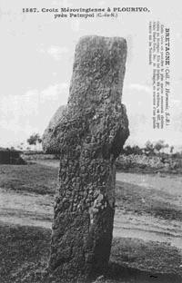
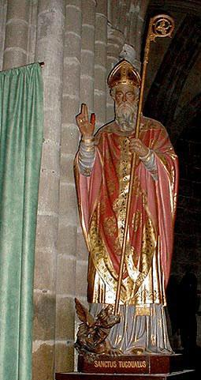
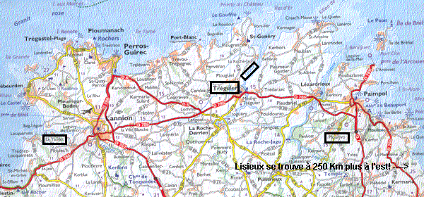

Ar Bleizi Mor
Ballade recueillie par Jean- Marie de Penguern (1807 - 1856)
Publiée par F-M Luzel dans "Gwerzioù Breizh-Izel" Tome I en 1868

Mélodie
tirée de "Tralalalaleno", recueil de 30 chansons publié par Jef Le Penven en 1949
Arrangement Christian Souchon (c) 2008
AR BLEIZI MOR |
LES LOUPS DE LA MER |
Notes
|
L'avis de Luzel Luzel expose, dans une longue note, qu'il tire ce chant de la collection de J-M. de Penguern dont il est devenu acquéreur. lI lui semble que ce chant a trait à une descente des Normands sur les côtes du Trégor en 836 et à la ruine du Yaudet par le roi Hastan, dont parlent Albert le Grand et Le Baud. Ces Danois furent vaincus dans la plaine de Plourivo. Luzel est cependant persuadé qu'il s'agit d'une imposture. A cela on peut répondre que Bertrand d'Argentré nous apprend dans son "Histoire de Bretagne" datant de 1582 qu'on "chante encore quelques vieux vers en breton" sur ce sujet." Il y a tout lieu de croire qu'il sagit du présent chant. On peut, en sens contraire, arguer que le faussaire, si faussaire il y a - et Luzel pense sans doute à Guillaume Kerambrun -, a voulu à toute force retrouver les vieux vers en question, fût-ce au prix d'une imposture. Un antique chant sur les Normands? Le folkloriste F-M. Luzel expose, dans une longue note, qu'il a tiré le chant Il écrit: "Il doit se rapporter à quelque descente des hommes du Nord, Normands ou Saxons, sur les côtes armoricaines, au IXè siècle. S'agit-il ici de la destruction du Koz-Guéodet par Hasting, vers l'an 836 ? Je crois qu'il n'est pas trop téméraire de le penser, sans rien affirmer pourtant. « Hasteing, » dit Albert le Grand, « capitaine des Danois qui escumaient la mer océane, vint cette année (836) avec une grosse armée navale au Bec-Léguer. Ils assiégèrent et emportèrent d'assaut la ville de Lexobie (Koz-Ieodet), massacrèrent le clergé et le peuple et pillèrent les trésors de l'église. » Le Baud dit aussi : « Haston, duc des Danois, persécutait les régions maritimes des Gaules, print Lexovium, et la disrompit. » Et Albert Le Grand ajoute: « Puis les barbares, passant outre, entrèrent dans l'embouchure de la rivière du Jaudy, et posèrent les ancres devant le monastère de Trécor [Treger, Tréguier], lequel ils pillèrent et ruinèrent. » Luzel poursuit: "L'armée des Bretons les atteignit à peu de distance de là, dans la grande lande de Plourivo, près de Paimpol, et c'est sans doute là que se livra la terrible bataille que le chant breton décrit avec une énergie si féroce : Bars ur blenenn, en bro Arvor." Vrai ou faux? Luzel est cependant persuadé que ce chant est un faux (fabriqué par un collaborateur de Penguern, Guillaume-René Kerambrun 1813 - 1852). A cela Donatien Laurent, dans "Culture et tradition orale dans la Bretagne Ducale 14-15èmes siècles", juin 1991), répond: "En 1582, au livre premier de son "Histoire de Bretagne", l'historien Bertrand d'Argentré évoque à propos du déplacement au IXème siècle du siège épiscopal du Yaudet à Tréguier, une descente de pirates danois sur les côtes du Trégor en 836 et ajoute qu'on "chante encore quelques vieux vers en breton" sur la prise et la ruine de la ville par le roi Hastan..J-M. de Penguern transcrivit un texte de chant breton qui paraît bien se rapporter à cet événement... Si le texte retrouvé dans les papiers de Penguern a bien été recueilli par lui dans la tradition vivante, on aurait la démonstration d'une transmission orale pendant 9 siècles..." Cette transmission orale sur une dizaine de siècles viendrait confirmer la thèse de La Villemarqué.  D'autant que, comme l'indique M. Laurent, la plaine de Plourivo, à l'est de Tréguier recèle de nombreux souvenirs archéologiques liés à cette bataille: croix carolingiennes, sépultures, toponymes, etc...Cependant, selon Bernard Tanguy, (cité sur le site Marikavel.org), la bataille de Plourivo (ou du Trieux) aurait trait à une attaque des Vikings qui eut lieu un siècle plus tard: "C'est là qu'à partir d'une tradition difficile à vérifier, des érudits ont voulu, au siècle dernier, localiser une bataille décisive livrée en 936 par le chef breton Alain Barbetorte au chef normand Incon, retranché dans l'enceinte fortifiée de Castel-Auffret, bataille que commémoreraient les croix du haut Moyen age de Lancerf et de la Chapelle-Neuve". Saint-Tugdual, évêque de Tréguier En fait, le récit qui situe au Yaudet le raid danois est la version "bretonne" de l'histoire. Les Normands (modernes) en ont une autre lecture, car pour eux Lexovium/Lexobie ne peut être que Lisieux. Les historiens anciens cités ci-avant tenaient leurs renseignements des "Vitae Tudualis" (1ère et 2ème "Vies de Saint Tugdual") compilées entre le 9ième et le 11ème siècle et de la "Vita tertia" (3ème version), datant du 13ème siècle. Dans la "Vita secunda", Tugdual débarque en Bretagne au Conquet puis traverse tous les pays ("pagi") qui constituent la Domnonée, qui avec le Broerec (Vannes) et la Cornouaille (Quimper) composent la Bretagne vers l'an 450. Ces pagi sont énumérés comme suit: pagus Achmensis, pagus Doudur, pagus Castelli, pagus Civitatis, pagus Treher, etc. Il est facile de les identifier: Aber Wrac'h, Daoudour=entre deux abers=Morlaix, Pou Kaer=Poher=Caraix, Tréguier... Pagus Civitatis, entre Caraix et Tréguier ne peut être que le "pagus Vetus Civitatis" (pays de la vieille cité) qui a donné (Kozh) "Geodet" en breton, francisé en "Le Yaudet". A en croire la "Vita tertia", Tugdual fut d'abord évêque de Lexobie (urbs ou civitas Lexoviensis ou Lexovium) que les "Vitae" identifient avec le Yaudet. Mais il pourrait tout aussi bien s'agir de Lisieux. Puis il fonda, avant 550 (!), date de la mort de l'évêque d'Angers, Saint Aubin, auprès de qui il se serait réfugié, le monastère de Tréguier (Trecor Vallis). Une charte de 1267 relatant les termes d´un accord intervenu entre le duc de Bretagne et l´évêque de Tréguier au sujet du fief épiscopal désigne le Yaudet sous la forme Vetus Civitatis, « Vieille Cité », tandis que beaucoup plus tard un document de 1707 mentionne le « lieu et metterie noble de Guéaudet ou la Vieille Cité, c´est-à-dire l´emplacement et appartenances de la ville d´Exobie où jadis estoit le siège épiscopal de Tréguier, sittué en la paroisse de Ploulec´h au terrouer du Minihy ». (source: archives.cotesdarmor.fr). Pour en savoir plus sur les saints bretons |
Luzel's opinion Luzel explains in a long note that he has found this ballad in a collection of songs set up by J-M. de Penguern that he happened to acquire. He believes that the song refers to a raid of the Normans (Northmen) on the shores of Tregor in 836 and to the ransacking of Le Yaudet by king Hastan, as reported by both Albert Le Grand and Le Baud. The Danish pirates were defeated in the plain of Plourivo. And yet Luzel is persuaded that this ballad is a forgery. We can object that Betrand d'Argentré, in his "History of Brittany" published in 1582, asserts that "they still sing a few old verses in Breton" about these events. The chances are that the present ballad is the song he means. On the contrary, it may be argued that the alleged counterfeiter, - and Luzel probably thinks of Guillaume Kerambrun - was anxious to retrieve the old verses in question, even at the price of an imposture. An ancient song about Normans F-M. Luzel explains in a long note that he has found a ballad titled in a collection of songs set up by a lawyer (and collector of Breton lore also known for his archaeological works on Roman highways), J-M. de Penguern (1807 - 1856), a collection that he happened to acquire (from his wife). He writes: "This song must refer to some raid of the Saxons or of the Northmen on the shores of Brittany in the 9th century. Maybe to the ransacking of Le Yaudet by Hasting around 836. This assumption, I take it, would not be too rash, though I refrain from asserting anything." "Hasteing", says Albert le Grand "was a Danish chieftain who buccaneered the ocean. He landed in that year (836) with a huge naval force at Bec-Léguer . The Danes besieged and took by storm the town Lexobie (Koz-Ieodet), killed all clerics and laymen and looted the church treasury." Le Baud confirms: "Haston, duke of the Danes, harassed the coasts of Gaul, took Lexovium and destroyed it". And Albert le Grand adds: "Then the Barbarians carried on their way , entered the Jaudy river mouth and dropped anchor before Trécor Abbey (Tréguier) which they ransacked and ruined." Luzel adds: "The Breton army engaged them on the nearby plain of Plourivo, near Paimpol, and there took place, very likely, the terrible battle that the Breton song pictures with such wild vigour: Bars ur blenenn, er vro Arvor (in a plain along the coast)." True or false? And yet, Luzel is persuaded that this song is a fake (forged by de Penguern's collaborator, Guillaume-René Kerambrun 1813 -1852) Donatien Laurent, in an article titled "Culture and oral tradition in 14th-15th Century Ducal Brittany", published in June 1991, objects that : Bertrand d'Argentré, in his "History of Brittany", dated 1582, asserts, concerning the translation of the Yaudet Episcopal see to Tréguier caused by a raid of Danish pirates on the coasts of Tregor in 836, that "they still sing a few old verses in Breton" about the capture and the ransacking of the town by king Hastan...J-M. de Penguern transcribed the text of a Breton folk song that seems to refer on this event... If the text retrieved in the Penguern files was really collected by him from the living tradition, this would prove the possibility of oral transmission over 9 centuries..." This instance of a transmission over ten centuries would corroborate La Villemarqué's theory! All the more so, since the Plourivo plain east of Tréguier, as noted y M.Laurent, abounds in archaeological artefacts connected with this battle: Carolingian crosses, graves, as well as suggestive place names... However another historian, Bernard Tanguy (quoted at the site Marikavel.org) considers that the battle of Plourivo, alias du Trieux, was fought against the Vikings a hundred years later.: "There 19th Century scholars maintained, basing themselves on traditions that are not easy to check, was allegedly fought a decisive battle by the Breton ruler Alan Twisted Beard against the Norman chieftain Incon, who was entrenched in the fortress of Castel-Auffret, in commemoration of which were erected early in the Middle-Ages the Lancerf and Chapelle-Neuve crosses." Saint Tugdual, bishop of Tréguier  In fact this is the Breton version of the story. The (modern) Normans have a different view of this issue because they don't admit that Lexovium / Lexobie could be another town than Lisieux. The old historians quoted above drew their information from the "Vitae Tudualis" (Life of Saint Tugdual - versions 1 and 2) compiled between the 9th and the 11th century and the "Vita tertia" (3rd version), dating from the 13th century. In the "Vita secunda", Tugdual lands in Brittany at Le Conquet then he travels all the way across Domnonea, one of the three provinces making up Brittany around 450, with Broerec (Vannes) and Cornouaille (Quimper). The "pagi" (shires) he crosses are listed: pagus Achmensis, pagus Doudur, pagus Castelli, pagus Civitatis, pagus Treher, etc. They are easy to identify as: Aber Wrac'h, Daoudour=Two firths=Morlaix, Pou Kaer=Poher=Caraix, Tréguier...Pagus Civitatis, between Caraix and Tréguier must be "pagus Vetus Civitas" (Old Town Shire) which evolved to (Kozh) "Yeodet" in Breton and "Le Yaudet" in French. According to the "Vita tertia", Tugdual was at first bishop of Lexobie (urbs or civitas Lexoviensis ou Lexovium) that the "Vitae" identify with Le Yaudet, but it really could be Lisieux. He then founded, before 550, the monastery of Tréguier (Trecor Vallis). A charter dated 1267 passed between the duke of Brittany and the bishop of Tréguier refers to Yaudet by the name "Vetus Civitatis" and a later document dating from 1707 mentions "Géaudet or Vieille Cité, i.e. the place and extensions of the town of Exobie where the Episcopal see of Tréguier was formerly established in the parish Ploulec'h, on the estates of the Minihy." (source: archives.cotesdarmor.fr) To know more about Breton Saints |

|
La Gwerz de Notre Dame du Koz-Guéaudet Par ailleurs, dans la "Revue de Bretagne et de Vendée", 1866, 2ème série, tome 9, pp. 221 et 222, ce même Luzel raconte tout d'abord une excursion qu'il fit au Yaudet.(qu'il appelle Koz-Guéodet). Il en ressort que certaines personnes du cru mais pas toutes appellent Le Yaudet, l'"ancienne Lexobie des Romains". Puis Luzel cite en traduction française, une gwerz, de toute évidence pas très ancienne et composée par quelque savant ecclésiastique "en l'honneur de ND du Yaudet". Elle fait allusion à l'expédition normande de 836. En voici un résumé détaillé: "[Je vous parlerai d'] une place sainte au bas de la rivière du Guer, la première église élevée en Bretagne à la Vierge. C'est le plus ancien sanctuaire du monde dédié à la Vierge, car c'est en 72 après J-C. que fut bâti le Guéodet en l'honneur de la Vierge. Un disciple de Joseph d’Arimathie, Drennalus, venu sur le conseil d'un saint homme de ses amis, fut le premier évêque de Lexobie. Il débarqua à Morlaix, venant de Grande-Bretagne. Puis Gwenaël, connu pour avoir fait brûler les idoles et répandu les images de Marie et des Apôtres, fut consacré par Melchidias, le successeur de Lin [officiellement c'est Clet ou Anaclet]. Saint Tugdual fut évêque de Lexobie soixante-trois ans et y mourut. Des barbares, nommés Danois, conduits par leur chef Hasterin (Hasting) arrivèrent à Lexobie sur leurs vaisseaux, la détruisirent et la brûlèrent. De Dol vint alors une armée pour chasser les Danois, mais, hélas, quand elle arriva, la ville était réduite en cendres. Le prince Momen, roi de Dol, craignant la disparition de cet évêché à la mort de Cerramus, le dernier évêque de Lexobie, nomma Gratien à sa place. Ce dernier demanda au roi la permission de transférer le siège de l'évêché dans le couvent de Trécor. Ce fut le commencement de Tréguier. Mais une chapelle fut reconstruite au Koz Guéodet et une source jaillit, opérant de multiples miracles. Un mot ne suffirait pas pour les rapporter et les écrire. Au Koz Guéodet, il y a un remède pour toute les maladies. Le pardon dure tout le mois de mai, pour donner le temps de gagner des indulgences." |
The gwerz of Our Lady of Koz-Guéaudet In the "Review of Brittany and Vendée", 1866, 2nd series, volume 9, pp. 221 and 222, the said Luzel tells us first of an excursion he made to Le Yaudet (which he calls Koz-Guéaudet). It appears that some local people but not all called Le Yaudet, the "old Lexobie of the Romans". Then Luzel quotes in French translation, an obviously not very old gwerz composed by some ecclesiastical scholar "in honor of Our Lady of Yaudet". It alludes to the Norman expedition of 836. Here is a detailed summary: "[I will tell you about] a holy place at the mouth of the river Guer, the first church raised in Brittany to honour the Virgin Mary. It is the oldest shrine in the world dedicated to the Virgin, because it was in 72 after JC, that the Gueodet sanctuary was built. A disciple of Joseph of Arimathea, Drennalus, who came on the advice of a holy man from his friends, was the first bishop of Lexobia. He landed at Morlaix, coming from Great Britain. Then Gwenael, known to have burned idols and replaced them with images of Mary and the Apostles, was consecrated by Melchidias, Lin's successor [officially it's Clet or Anaclet]. Saint Tugdual was bishop of Lexobie, when he was sixty-three, and he died there. Barbarians, named Danes, led by their chief Hasterin (Hasting) arrived at Lexobie on their ships, destroyed it and burned it. From Dol came then an army to drive out the Danes, but, alas, when they arrived, the city was already burnt to ashes. The prince Momen, king of Dol, fearing the disappearance of this bishopric at the death of Cerramus, the last bishop of Lexobie, named Gratian in his place. The latter asked the king for permission to transfer the seat of the bishopric to the convent of Trécor. This was the beginning of Tréguier. But a chapel was rebuilt at Koz Gueodet and a fountain sprang, operating multiple miracles. One word would not suffice to bring them back and write them. At Koz Guéodet, there is a cure for all diseases. A Pardon feast lasts all the month of May, to give pilgrims time to win indulgences. " |

|
L'avis du prêtre Y.K. cité par La Borderie Dans un article intitulé "Le Yaudet en 1778" publié en 1882 dans la "Revue de Bretagne et de Vendée, 6ème série, tome I, Arthur de La Borderie, cite longuement un prêtre breton dont on ne connaît que les initiales, Y. K. de Morlaix. Ce prêtre s'efforçait de réfuter l'affirmation de son confrère, l'abbé Déric, parue dans le 1er tome d'une "Histoire ecclésiastique de la Bretagne", selon laquelle c'est à tort que l'on prétend, comme le fait Dom Morice que les vestiges que l'on trouve au Yaudet seraient ceux de la ville des Lexobii. Cette identification est faite par Albert Le Grand (1599-1641) dans sa "Vie des Saints de Bretagne". Elle est suggérée par la Deuxième et de la Troisième "Vie de Saint Tugdual", datant respectivement du 11ème et du 13ème siècle. Elles mentionnent l'une, un "Pagus Vetus Civitati"s dans lequel on peut voir "Kozh-Geodet"= Le Yaudet, l'autre le premier évêché confié à Tugdual, "urbs ou civitas Lexoviensis ou Lexovium". Un document de 1707 précise "lieu et metterie noble de Guéaudet ou la Vieille Cité, c´est-à-dire l´emplacement et appartenances de la ville d´Exobie où jadis estoit le siège épiscopal de Tréguier, sittué en la paroisse de Ploulec´h au terrouer du Minihy". Y. K. affirme qu'il s'agit bien de la cité du peuple dont parle César ("Commentaires", III, 9,11, 17, 29; VII, 75), cité que les Danois auraient ruinée en 836. Déric pense que, même si des Bretons ont fondé jadis ici une petite ville du temps des Saxons, on ne peut pas enlever les Lexobii au diocèse de Lisieux. - Il existe un "pèlerinage de mai" au Yaudet, - dont il est question dans diverses gwerzioù collectées par La Villemarqué, Mme de Saint-Prix et de Penguern (cf. Le Pardon du Yaudet ) et par Luzel (cf. Le Marquis de Coatrédrez (sachant toutefois qu'il peut y avoir confusion entre deux lieux de culte marial aux noms apparentés et distants de 30 km seulement, le Yaudet et Le Guïaudet, près de St Nicolas-du Belem). - N'est-ce pas là ...l'assemblée du Champ de Mai [Beltaine]...des anciens Celtes? - Le "Yau-det" n'est-il pas la "montagne du Tet", l'ancien nom du Léguer, où les chefs gaulois conduisaient leurs clients, un usage dont des traces subsistent dans le droit de mobilisation de troupes qu'exercent, au mois de mai, les seigneurs de Loguivi, de Kerninon et de quelques fiefs voisins du Yaudet?" [Ce privilège d'un autre âge pourrait expliquer l'attitude cavalière que les gwerzioù citées ci-dessus prêtent au seigneur de Coatrédrez]. - Les mégalithes autour du Yaudet à une distance d'une lieue et quart n'étaient-ils pas une enceinte religieuse? - La superstition [locale] qui conduit à poser à la surface de la fontaine de Loguivi la chemise d'un enfant dont on veut savoir s'il vivra, ne rappelle-t-elle pas quelque ancienne vénération de l'eau et des fontaines? En se reportant aux commentaires qui accompagnent la gwerz Le Pardon du Yaudet , on verra que cette hypothèse n'est pas dénuée de fondement. Elle était défendue par l'Abbé Le Clec'h qui fut recteur de Ploulec'h de 1934 à 1956. Y.K. conclut à l'existence de deux Lexobies, l'une à Lisieux, l'autre au Yaudet et esquisse l'histoire de ce dernier jusqu'au 13ème siècle. La Borderie, quant à lui, est d'avis que si "Déric avait fort raison de repousser les Lexobii du Yaudet, il avait encore plus tort de nier l'existence en ce lieu d'une ville antique." C'est sans doute la position qu'il défendait en 1863 dans un article intitulé "Les origines du diocèse de Tréguier-Le Coz-Yaudet", publié par "Le Collectionneur Breton" (T.3, pp. 57-68 et 97-115). Dans sa longue note Luzel se référait à cet article. |
The opinion of the priest Y.K. quoted by La Borderie In an article entitled "The Yaudet in 1778" published in 1882 in the "Review of Britain and Vendée, 6th series, Volume I, Arthur La Borderie, quotes at length a Breton priest whose only initials are known, YK de Morlaix This priest endeavoured to refute the affirmation of his confrere, the Abbe Deric, published in the first volume of an "Ecclesiastical History of Brittany", to the effect that it is wrong to pretend, as does Dom Morice that the remains found in the Yaudet are those of the city of the Lexobii.This identification was made by Albert Le Grand (1599-1641) in his "Life of the Saints of Brittany." It is suggested by the Second and Third "Life of Saint Tugdual", dating respectively from the 11th and 13th century. Thr first of them mentions a "Pagus Vetus Civitati" in which we can see "Kozh-Geodet" = The Yaudet. The second adresses the first bishopric entrusted to Tugdual, as "urbs or civitas Lexoviensis or Lexovium." A document dated 1707 specifies "the noble place and precinct of Guéaudet alias the Old City, that is to say the core and outskirts of the city of Exobie where formerly was the see of Tréguier, located in the parish of Ploulec'h, in the precinct of the Minihy ". YK asserts that this is really the city of the tribe mentioned by Caesar in his "Comments", III, 9, 11, 17, 29, VII, 75. This city was allegedly ruined by the Danes in 836. Deric thinks that, even if Bretons once founded here a small town in Saxon times, the Lexobians can not be spirited away from the diocese of Lisieux. - There is a "May pilgrimage" to Yaudet, - which is mentioned in various gwerzioù collected by La Villemarqué, Mme de Saint-Prix and de Penguern (see The Pardon of Yaudet) as well as by Luzel (see The Marquis of Coatrédrez (however there may be a confusion between two Marian places of worship with related names and distant of only 30 km, "Le Yaudet" and "Guïaudet", near St Nicolas-du Belem). - "Is this not ... the meeting place known as Field of May [Beltaine] ... of ancient Celts? - Is not "Yau-det" the "mountain of the Tet", the former name of the Leguer, river where the Gallic leaders led their adherents, a use whose traces remain in the right of mobilization of troops that exercise, in May, the Lords of Loguivi, Kerninon and some neighbouring strongholds, around Yaudet? [This antiquated privilege could explain the saucy attitude that the gwerzioù quoted above ascribe to the lord of Coatrédrez] . - Were not the megaliths standing around Yaudet at a distance of a league and a quarter a religious enclosure? - Does not the [local] superstition consisting in laying on the surface of the fountain of Loguivi the shirt of a child, to find out if he will live, recall some ancient water and fountain cult? . If you refer to the comments accompanying the gwerz The Pardon du Yaudet , you will find that this assumption is not devoid of merit and was defended by the Rev. Le Clec'h who was vicar of Ploulec'h from 1934 to 1956. Y.K. concludes that there are two Lexobies, one in Lisieux, the other in Yaudet, and sketches out the history of the latter until the 13th century. La Borderie, meanwhile, is of the opinion that if "Deric had good reason to reject Lexobii Yaudet, he was even more wrong to deny the existence in this place of an ancient city." This is undoubtedly the position he defended in 1863 in an article entitled "The origins of the diocese of Tréguier-Le Coz-Yaudet", published by "The Breton Collector" (T.3, pp. 57-68 and 97). -115). In his long note Luzel was referring to this article. |

|
L'avis du Chevalier de Fréminville Il existe une étude sur "Le Koz-Géaudet" datant de 1837 par le Chevalier de Fréminville dans les Antiquités des Côtes-du-Nord, p. 17-18: "Au-dessous de Lannion, en allant vers la côte, à l 'embouchure de la rivière du Guer, existait une de ces grandes et antiques cités, dont parlent si souvent les vieilles traditions bretonnes, et qui sont aujourd'hui entièrement effacées de la surface du sol Celle-ci portait le nom de Lexobie et n'était pas moins renommée, selon nos légendes,que les villes d'Is , de Tolente , d 'Occismor , etc. dont nous ne connaissons plus que les noms et dont les positions mêmes sont douteuses. Plus respectée pourtant que ces dernières , par la faux destructive d u temps, Lexobie a laissé quelques vestiges qui peuvent du moins fixer avec certitude le lieu où elle s'élevait jadis, du moins s'il faut s'en rapporter à quelques personnes, qui croient en retrouver les restes près du village de Coz-Guéaudet, dans quelques fondations de murs et l'entrée d'une espèce de caveau. Pour nous, tout en accordant l'existence passée de la cité de Lexobie , au lieu où on la place encore aujourd'hui, nous n'oserons rien affirmer d'après des vestiges si vagues et si peu significatifs. Les historiens fixent l'époque de sa destruction au huitième ou au neuvième siècle. Selon [le chanoine Pierre] Le Baud [mort en 1515], elle aurait été saccagée en 856, par Haston ou Hasting,, célèbre chef Danois. Mais il paraît que cet auteur se trompe et qu'il prend ici le sac de Tréguier pour celui de Lexobie; selon Ogée, cettle cité aurait été prise en 786 , par un des généraux de Charlemagne, et ensuite totalement rasée. C'est l'opinion la plus fondée et la plus généralement adoptée." Elle est confortée par le fait que les "Vitae Tudualis" (Vies de Saint Tugdual) datent la fondation par ce personnage du monastère de Tréguier du vivant de l'évêque d'Angers, Saint Aubin, lequel mourut en 550. L'avis de l'Abbé L. Le Clec'h L' Abbé L. Le Clec'h, recteur de Ploulec'h de 1934 à 1956, publia en 1956 un opuscule de 78 pages intitulé "Le Yaudet, place forte armoricaine et antique centre religieux". Il s'appuie sur les travaux du colonel Joseph Pérès ainsi que sur les ouvrages d'Arthur de La Borderie et du R.P. Albert Le Grand. On retrouve dans sa théorie les points essentiels de la gwerz moderne de Luzel. "Geodet, dreist Odet ha Kemper/ Geodet, ker ar bobl añvet Yadet" "Le Yaudet, par delà l'Odet et Quimper, Le Yaudet, ville du peuple nommé 'Yadètes'" Drennalus est également connu dans le pays du Yaudet et de Tréguier sous l'appellation de Sant Drenold ou Sant Drel, un élément du nom de nombreux lieux-dits. A la suite de ce premier apôtre du Trégor, Albert Le Grand cite une liste de 72 évêques (=prélats?) de Lexobie, jusqu'à la destruction de l'évêché, dont 64 avant Tugdual et un "saint Gwennaël", comme dans la gwerz moderne reproduite en français par Luzel. Après tant de développements consacrés à l'ancien évêché de Lexobie, on est étonné de constater que la présentation moderne de l'antique citadelle n'y fasse pas allusion. L'avis des archéologues contemporains Des fouilles de ce site ont été entreprises conjointement par l'Université de Bretagne Occidentale et l'Université d'Oxford de 1991 à 2002. Le panneau à l'usage des visiteurs reproduit ci-après résume en 18 points les résultats de ces recherches. Elles ont montré que ce promontoire fut fréquenté dès le Néolithique (mégalithes: 10, 14), sans doute fortifié au Bronze final (remparts traversier: 1 et périphérique :6), puis occupé de manière continue de la fin de l'âge du Fer (Un roc dans lequel les organisateurs du site veulent voir un gnomon utilisé par le navigateur grec Pytheas: 15) à aujourd'hui (plus de 4000 ans): oppidum portuaire à La Tène finale, place fortifiée dans l'Antiquité romaine tardive, village agricole au Moyen Age, sans oublier la surprenante digue cyclopéenne dite des "moulins à marée" (moger ar milinoù mor) érigée vers le 6ème ou 7ème siècle au prix d'efforts gigantesques que ne justifient pas de simples objectifs de pêche 13. L'ancienneté d'un pèlerinage est attestée et la chapelle Notre-Dame du Yaudet, reconstruite au milieu du XIXème siècle qui a conservé son étonnant rétable de la Vierge couchée est sans doute une des premières du christianisme, succédant effectivement, en cet endroit, à un oratoire celte et à un temple romain: 3 Mais il n'est ni confirmé ni infirmé que ce site fut jamais un établissement monastique, ni le siège du premier évêché du Trégor au haut Moyen Age, comme l'affirme la tradition rappelée ci-dessus. De sorte quil y a toujours non pas une, mais deux pommes de discorde entre Bretons et Normands: le Mont Saint-Michel et Lexobie. |
The opinion of the Chevalier de Fréminville There is a study on "Koz-Géaudet" dating from 1837 by the Chevalier de Freminville in the "Antiquities of Côtes-du-Nord", p. 17-18: "South of Lannion, towards the coast, at the mouth of the river Guer, existed one of those great and ancient cities, of which the old Breton traditions so often speak, and which are now entirely erased from the surface of the earth This city bore the name of Lexobie and was not less famous, according to our legends, than the cities of Is, Tolente, Occismor, etc. of which we only know the names and whose locations are dubious. Spared to a larger extent than the others by the fatal scythe of time, Lexobie has left some vestiges which allow us, at least, to pinpoint with certainty the place where it formerly stood, at least if we are to believe people, who claim to have found its remains near the village of Coz-Guéaudet, in some foundations of walls and the entrance of a kind of vault. For us, while granting the past existence of the city of Lexobie, we dare not affirm that it once stood at that very place, on account of such vague and insignificant remains. Historians assess the time of its destruction in the eighth or ninth century. According to [Canon Pierre] Le Baud [who died in 1515], it was ransacked in 856, by Haston or Hasting, a famous Danish ruler. But it seems that Le Baud is mistaken and that he mistakes Tréguier's ransacking for Lexobie's; according to Ogée, this city was taken in 786, by one of Charlemagne's generals, and then razed to the ground. This is the most well-founded and widely adopted opinion. " It is comforted by the fact that the "Vitae Tudualis" (Lives of Saint Tugdual) date the foundation by this personage of the monastery of Tréguier during the life of the bishop of Angers, Saint Aubin, who died in 550. The opinion of the Rev. L. Le Clec'h L. Le Clec'h, vicar of Ploulec'h from 1934 to 1956, published in 1956 a pamphlet of 78 pages entitled "Le Yaudet, an Armorican stronghold and ancient religious center". It is based on the work of Colonel Joseph Peres and the books of Arthur La Borderie and Albert Le Grand. In his theory we find the essential points of Luzel's modern gwerz. "Geodet, dreist Odet ha Kemper / Geodet, ker ar bobl añvet Yadet" "Yaudet, beyond Odet and Quimper / Yaudet, city of the people named 'Yadetes'". Drennalus is also known in the country of Yaudet and Tréguier under the name of Sant Drenold or Sant Drel, an element found in many placenames. Following this first Apostle of Trégor, Albert Le Grand quotes a list of 72 bishops (or were they only prelates?) of Lexobie, until the destruction of the bishopric, including 64 names before Tugdual and one "Saint Gwennael", addressed in the above modern gwerz printed in French by Luzel. After so many developments devoted to the former Bishopric of Lexobia, it is astonishing that the modern presentation of the ancient citadel should not allude to it. The opinion of contemporary archaeologists Excavations were carried out jointly between 1991 and 2002 by the University of Western Brittany and Oxford University. The below explanation board at the entry of the site sums up in 18 items the results of these investigations. They showed that this promontory was already inhabited in the Neolithic period (megaliths: 10, 14), probably fortified in the late Bronze Age (walls across the headland and along the shore: 1 and 6) , and then continuously occupied from the end of the Iron Age (a rock allegedly used as a gnomon by Pytheas the Greek: 15) to the present day. (more than 4000 years): it was a fortified harbour late in La Tène time, a fortified place in late Roman antiquity, an agricultural village in the Middle Ages, when, around the 6th or 7th century, the surprising cyclopean dike called "tide mills" (moger ar milinoù mor) was erected at the cost of gigantic efforts for which mere fishing purposes would not account 13. The antiquity of a pilgrimage is attested and the chapel Notre-Dame du Yaudet, rebuilt in the middle of the 19th century, which has preserved its astonishing retable of the Reclining Virgin, is undoubtedly one of the oldest places of worship of Christianity, succeeding indeed, in this place, to a Celtic oratory and a Roman temple: 3. But it is neither confirmed nor denied that this place was a monastic establishment or the seat of the first bishopric of Trégor in the early Middle Ages, as the tradition mentioned above has it. So that there still are not one but two bones of contention between Bretons and Normans: Mont Saint Michel and Lexobie! |

Panneau implanté à l'entrée du site du Yaudet